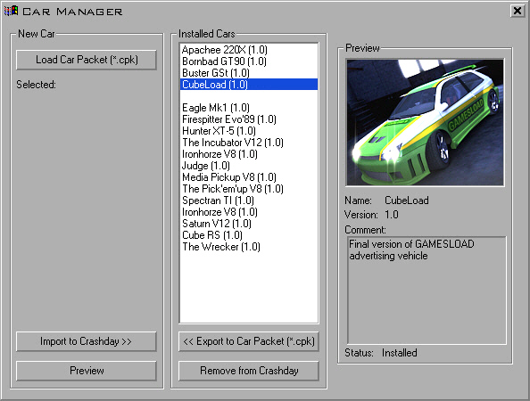

This tool is a stand-alone application and you can give it to friends
or distribute it online for others to install new cars. Nothing except the exectuable carmanager.exe is required to run the program
This tool is a stand-alone application and you can give it to friends
or distribute it online for others to install new cars. Nothing except the exectuable carmanager.exe is required to run the program
Location: [crashday]\tools\carmanager

Crashday
Car Manager interface
The
Crashday Car Manager is a utility to install, remove, view and export custom vehicles for Crashday.
This tool is a stand-alone application and you can give it to friends
or distribute it online for others to install new cars. Nothing except the exectuable carmanager.exe is required to run the program
When starting for the first time, it will ask for the Crashday installation directory. After setting it correctly (e.g. C:\Games\Crashday) the Car Manager will run properly.
The manager gives an overview about any cars installed in your [crashday]\trkdata\cars folder, including default cars. To import or export cars, the
Car Manager is working with so called .cpk files ("Car Packet"). These archives contain all files required for a full Crashday car.
Exporting a car
When planning to export a car for distribution, pick the car from the list and click "<< Export to Car Packet". This will automatically gather all car related information and files
and put them into the .cpk file. This car file is what you should provide to other users.
If you like (recommended) you can put two additional files in your car folder before exporting. One file "preview.bmp" which is a preview image that
will be displayed in the Car Manager (optimal resolution: 175x141). The other file is "version.txt", a text file with version and car author information. In this text file,
the first line identifies a car's version number (e.g. "0.9") while all other lines are open for any text you like to provide.
The
program will ask for additional content that maybe needs to be
delivered with your .cpk-file (e.g. custom rim model and texture)
when you hit the “Export to Car Packet” button. Just
select the relevant files and they'll be automatically added to the
.cpk-file.The
.cpk-file created by the carmanager is uncompressed. To achieve
optimal file size we recommend to compress it using a common tool.
(e.g. winrar)
Importing a car
Click "Load Car Packet" in the Car Manager and pick the *.cpk file you have downloaded or received from a friend. Click OK. Now you will see a preview of the car.
If you now like to install this car into your Crashday installation, click "Import to Crashday >>" and you will see your ride come up in the game's installed cars list. This will extract the archive and place all files into a car folder in [crashday]\trkdata\cars. The folder name is determined based on car name and version number.